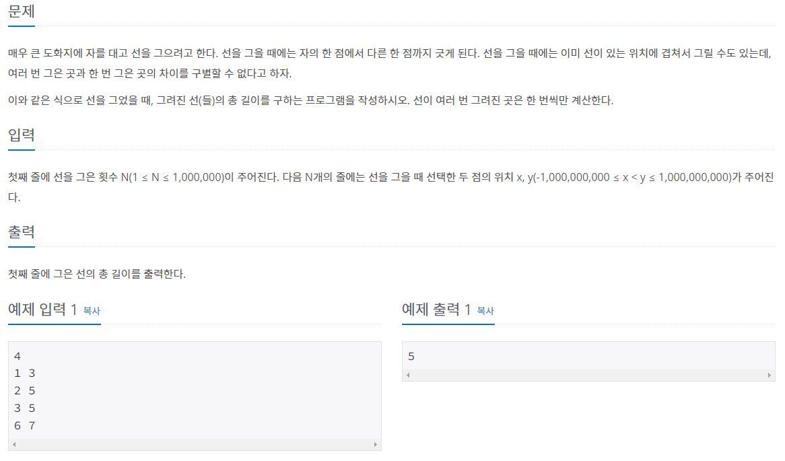
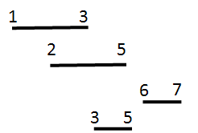
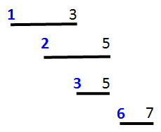
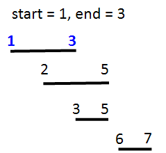
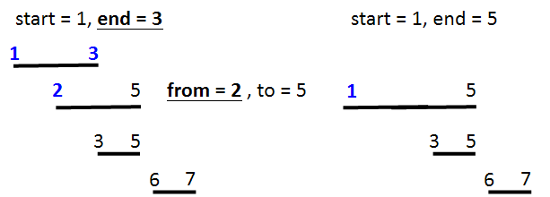
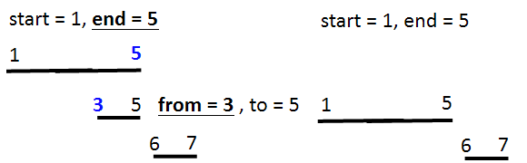
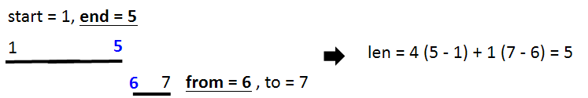

#INFO
난이도 : GOLD5
출처 : 2170번: 선 긋기 (acmicpc.net)
2170번: 선 긋기
첫째 줄에 선을 그은 횟수 N(1 ≤ N ≤ 1,000,000)이 주어진다. 다음 N개의 줄에는 선을 그을 때 선택한 두 점의 위치 x, y(-1,000,000,000 ≤ x < y ≤ 1,000,000,000)가 주어진다.
www.acmicpc.net

#SOLVE
선을 그을 때 선택한 두 점의 위치 x, y를 pair를 이용해 vector 자료구조에 입력받습니다.
int n;
cin >> n;
vector<pair<int,int>> line;
for (int i = 0 ; i < n ; i++) {
int start, end;
cin >> start >> end;
line.push_back(make_pair(start, end));
}
다음으로 시작점(start)를 기준으로 벡터를 오름차 정렬합니다.
// line vector "start" 기준 정렬
sort (line.begin(), line.end());
line 벡터의 0번째 페어의 x , y 좌표를 start와 end 변수에 저장합니다.
int start = line[0].first;
int end = line[0].second;
이제 line 벡터의 1번째 인덱스부터 비교를 시작합니다. i번째 인덱스의 x, y 좌표를 from , to 변수에 저장하고 end 변수와 비교합니다. 만약 end 변수보다 from 변수가 작다면 , 두 선은 겹친다는 뜻이기에 선을 하나로 만들어 줍니다.
반대로 end 변수보다 from 변수가 크다면 두 선은 겹치지 않기에 각각 따로 len(총 길이) 변수에 더해줍니다.
이 과정을 분기문을 이용해 코드로 표현해 주면 됩니다.
for (int i = 1 ; i < n ; i++) {
int from = line[i].first;
int to = line[i].second;
// 겹치는 경우
if (from <= end) {
end = (to > end ? to : end);
}
// 겹치지 않는 경우
else {
len += end - start;
start = from;
end = to;
}
}
len += end - start;  
#CODE
#include <iostream>
#include <algorithm>
#include <vector>
#include <utility>
using namespace std;
int main() {
// 시간초과 방지
ios_base::sync_with_stdio(false);
cin.tie(0);
int n;
cin >> n;
vector<pair<int,int>> line;
for (int i = 0 ; i < n ; i++) {
int start, end;
cin >> start >> end;
line.push_back(make_pair(start, end));
}
// line vector "start" 기준 정렬
sort (line.begin(), line.end());
int start = line[0].first;
int end = line[0].second;
int len = 0;
for (int i = 1 ; i < n ; i++) {
int from = line[i].first;
int to = line[i].second;
// 겹치는 경우
if (from <= end) {
end = (to > end ? to : end);
}
// 겹치지 않는 경우
else {
len += end - start;
start = from;
end = to;
}
}
len += end - start;
cout << len << endl;
return 0;
}